CS180 · Project 4A
Recovering homographies from point correspondences, inverse warping with nearest-neighbor and bilinear interpolation, rectification, and blending photos into mosaics.
For each set, I kept the center of projection fixed and only rotated the phone between shots, so the two photos are related by a projective transformation (a homography). The pairs overlap substantially, which leaves plenty of shared features for clicking correspondences. The photos are 600×800.
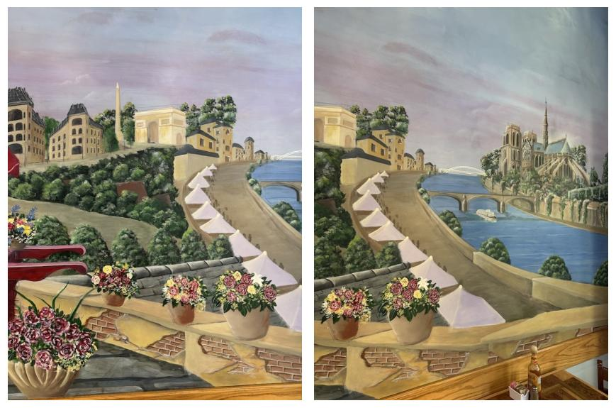
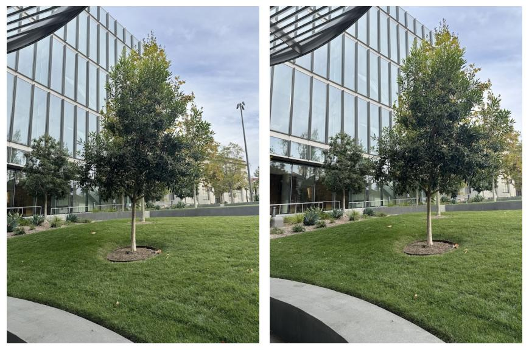
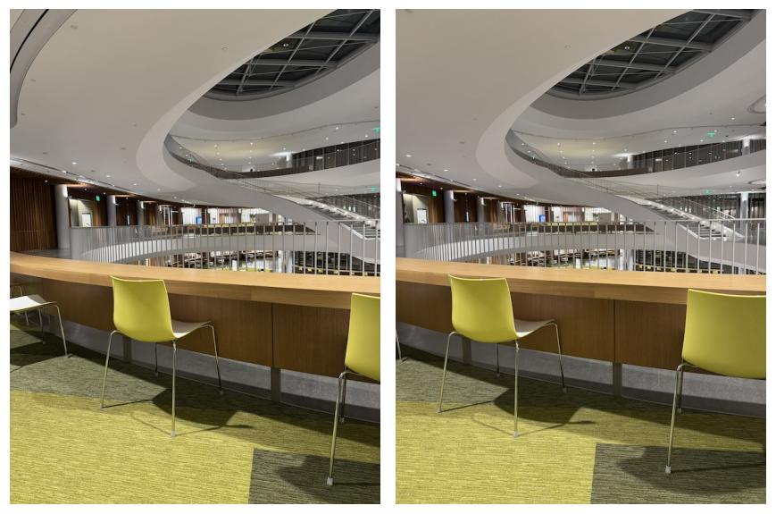
A homography maps a point \(p = (x, y)\) in image 1 to \(p' = (x', y')\) in image 2. In homogeneous coordinates it is a 3×3 matrix with the bottom-right entry fixed to 1, leaving 8 unknowns:
\[ \begin{bmatrix} w x' \\ w y' \\ w \end{bmatrix} = \begin{bmatrix} h_{11} & h_{12} & h_{13} \\ h_{21} & h_{22} & h_{23} \\ h_{31} & h_{32} & 1 \end{bmatrix} \begin{bmatrix} x \\ y \\ 1 \end{bmatrix} \]The output comes back scaled by \(w = h_{31}x + h_{32}y + 1\), so the actual pixel is found by dividing: \(x' = (h_{11}x + h_{12}y + h_{13})/w\). Multiplying both sides by the denominator makes each equation linear in the unknowns, so every correspondence gives two rows of a linear system \(A\mathbf h = \mathbf b\):
\[ \begin{bmatrix} x & y & 1 & 0 & 0 & 0 & -x x' & -y x' \\ 0 & 0 & 0 & x & y & 1 & -x y' & -y y' \end{bmatrix} \mathbf h = \begin{bmatrix} x' \\ y' \end{bmatrix}, \qquad \mathbf h = [h_{11}, h_{12}, h_{13}, h_{21}, h_{22}, h_{23}, h_{31}, h_{32}]^\top \]Four points give exactly 8 equations, but then every click error is fit perfectly. I clicked 11 correspondences per pair, so \(A\) is 22×8 and the system is overdetermined; I solve it with least squares, which minimizes \(\|A\mathbf h - \mathbf b\|^2\) and averages out click noise.
Points were clicked in the same order on both images; matching numbers mark the same physical feature.
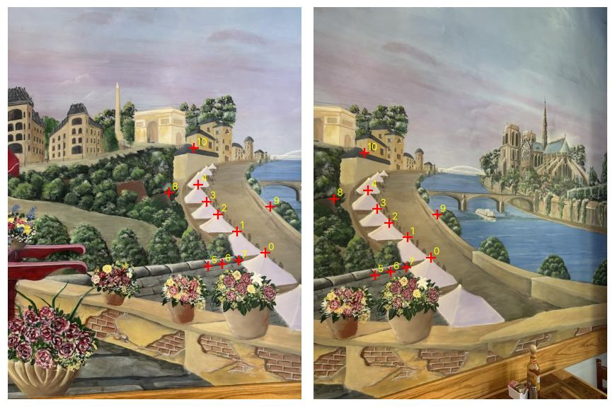
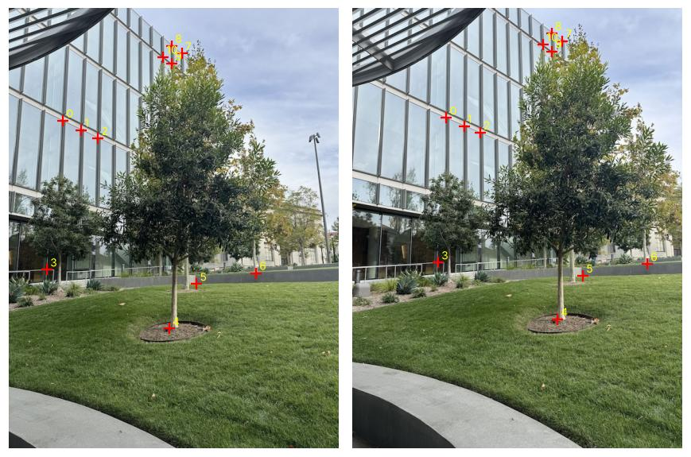
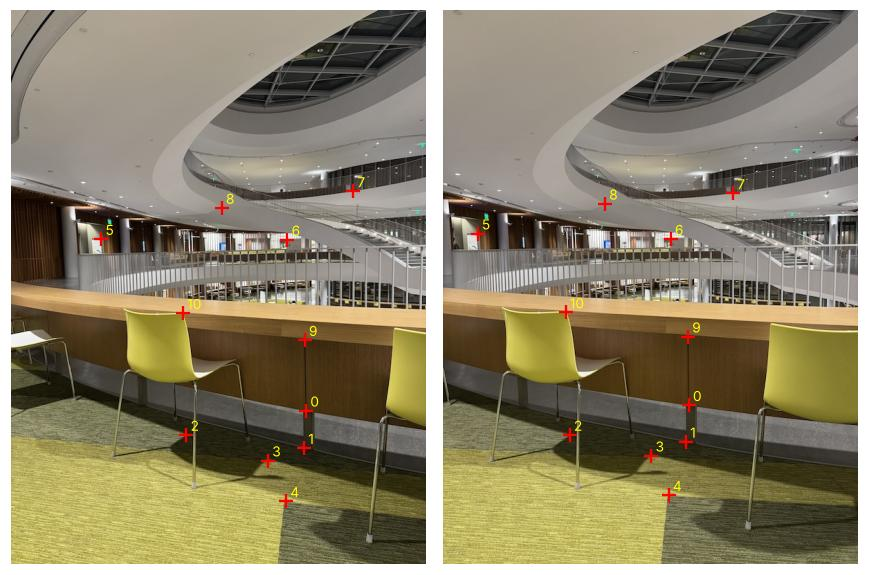
The first two correspondences, \((525, 501) \to (239, 510)\) and \((468, 457) \to (192, 469)\), give the first four rows of the 22×8 system:
\[ \begin{bmatrix} 525 & 501 & 1 & 0 & 0 & 0 & -125475 & -119739 \\ 0 & 0 & 0 & 525 & 501 & 1 & -267750 & -255510 \\ 468 & 457 & 1 & 0 & 0 & 0 & -89856 & -87744 \\ 0 & 0 & 0 & 468 & 457 & 1 & -219492 & -214333 \\ & & & & \vdots & & & \end{bmatrix} \mathbf h = \begin{bmatrix} 239 \\ 510 \\ 192 \\ 469 \\ \vdots \end{bmatrix} \]The third column is the translation between the shots, and the small bottom-row entries \(h_{31}, h_{32}\) are what make the transform projective rather than affine. As a check, I mapped every image-1 point through \(H\) and measured its distance to the clicked image-2 point:
| Set | Correspondences | Mean error (px) | Max error (px) |
|---|---|---|---|
| Mural | 11 | 1.52 | 3.37 |
| Courtyard tree | 11 | 1.04 | 2.08 |
| Gateway | 11 | 0.86 | 1.75 |
All points reproject within a few pixels, which is consistent with click noise.
I use inverse warping. Forward warping (pushing each source pixel through \(H\)) leaves holes wherever the transform stretches the image. Instead, for every pixel of the output I ask where it came from in the source, using \(H^{-1}\), and sample the source there. Every output pixel gets exactly one value, so there are no holes.
Pixel centers sit at integer coordinates, so pixel im[r, c] is the point \((x, y) = (c, r)\) and the valid range is \(0 \le x \le w-1\).
Round \((s_x, s_y)\) to the closest pixel and copy its color: one lookup per output pixel.
Take the 4 pixels surrounding \((s_x, s_y)\) and weight each by its closeness. With \(x_0 = \lfloor s_x \rfloor\), \(y_0 = \lfloor s_y \rfloor\), \(d_x = s_x - x_0\), \(d_y = s_y - y_0\):
\[ I = (1-d_x)(1-d_y)\,I_{00} + d_x(1-d_y)\,I_{10} + (1-d_x)\,d_y\,I_{01} + d_x d_y\,I_{11} \]To test the warp, I rectified objects I know are rectangular. There is no second photo: I clicked the object's 4 corners (top-left, top-right, bottom-right, bottom-left) and mapped them to an axis-aligned rectangle with the object's real aspect ratio (width ÷ height). The rectangle is sized to match the object's size in the photo, and the output is cropped to the rectangle plus a margin so far-away parts of the scene don't blow up the canvas.
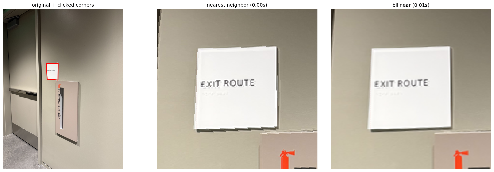
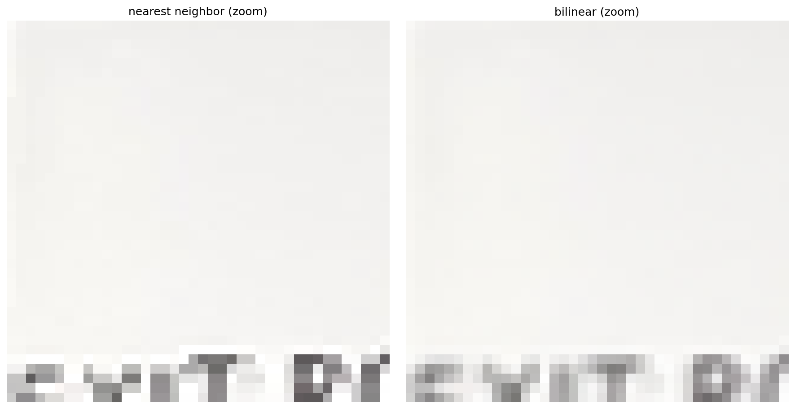
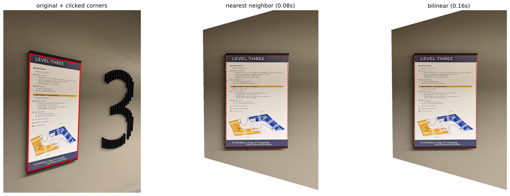
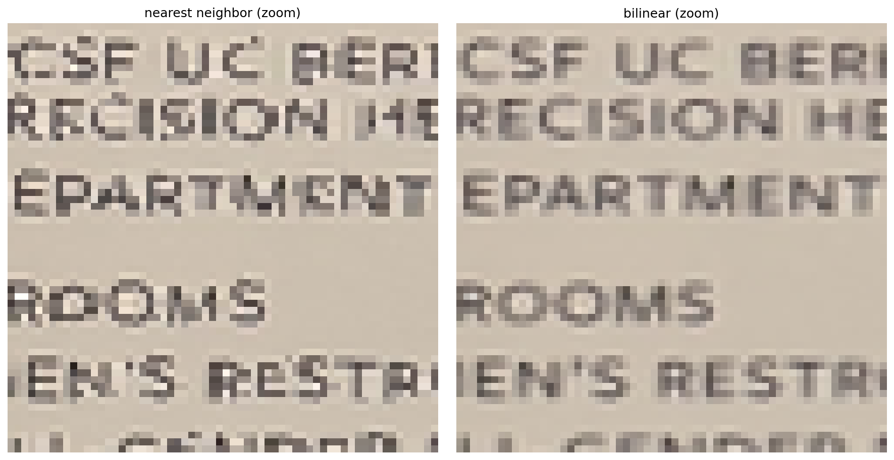
Both signs come out square to the image axes with straight edges, while the wall around them is skewed, as expected: only the plane of the sign is rectified.
| Image | Output size | Nearest neighbor | Bilinear | Slowdown |
|---|---|---|---|---|
| Exit sign | 202×202 | 0.003 s | 0.007 s | 2.2× |
| Floor directory | 736×1165 | 0.084 s | 0.158 s | 1.9× |
Quality: nearest neighbor produces jagged, stair-stepped edges on the letters and the sign borders, because each output pixel snaps to one source pixel. Bilinear edges are smooth, at the cost of slight blur, since it averages neighboring pixels. Speed: bilinear does 4 lookups and a weighted sum per pixel instead of 1 lookup, and was about 2× slower here. Both are fast once vectorized, so I use bilinear for all the mosaics.
warpImageBilinear.blur(im·mask) / blur(mask), fixed it.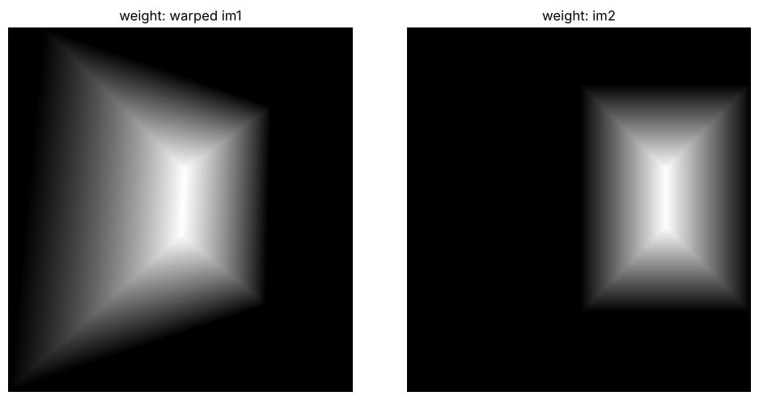
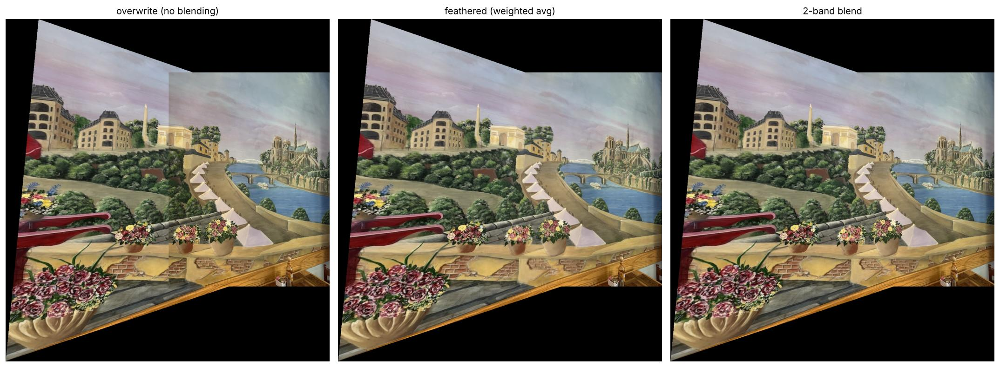
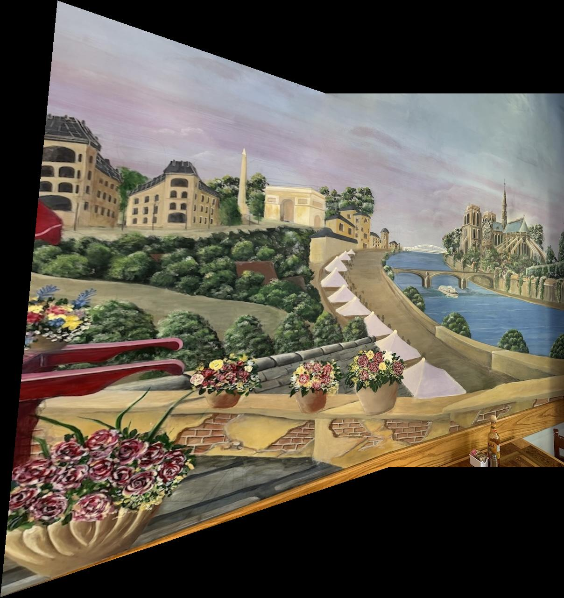
Overwriting leaves a hard vertical seam and a visible brightness step in the sky. Feathering removes both; the 2-band blend keeps the painted brushwork sharp across the overlap.
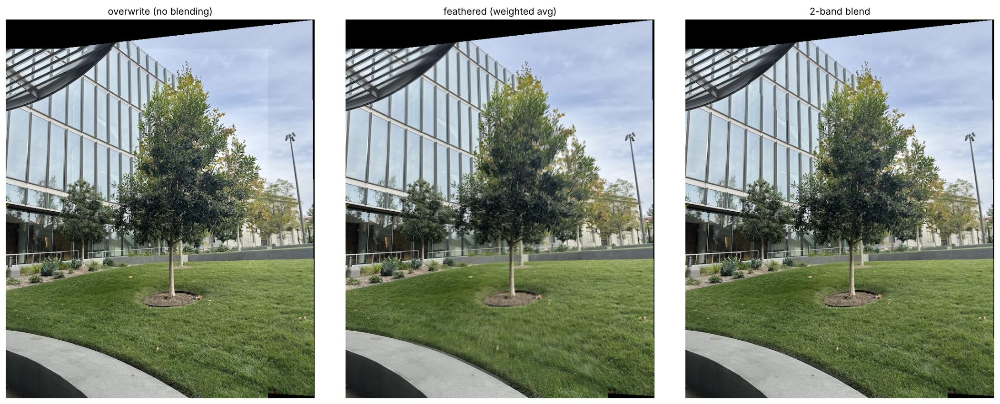
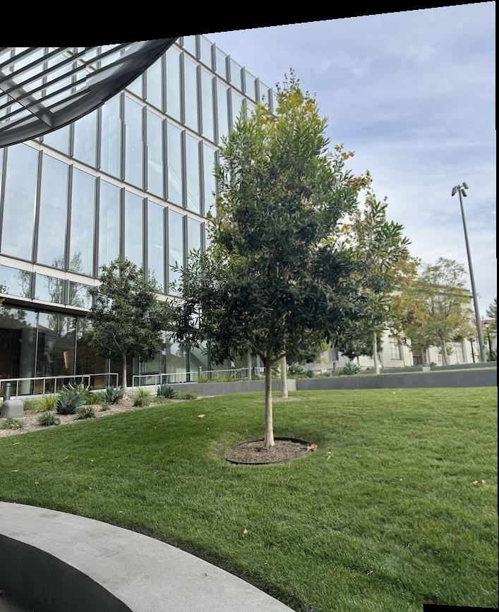
This set shows the difference between the two blends most clearly. The leaves moved slightly between shots, so feathering averages two different versions of the canopy and the tree looks doubled and blurry. The 2-band blend takes each leaf's detail from a single image, and the tree stays sharp.
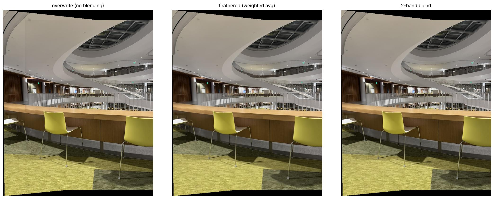
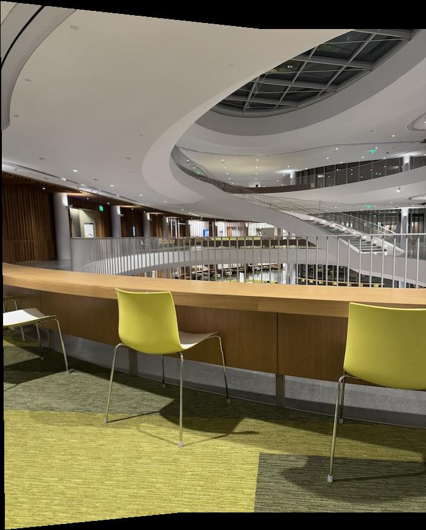
The overwrite version shows a faint seam in the ceiling where the exposures differ; both blends hide it, and the railings and staircase line up across the overlap.